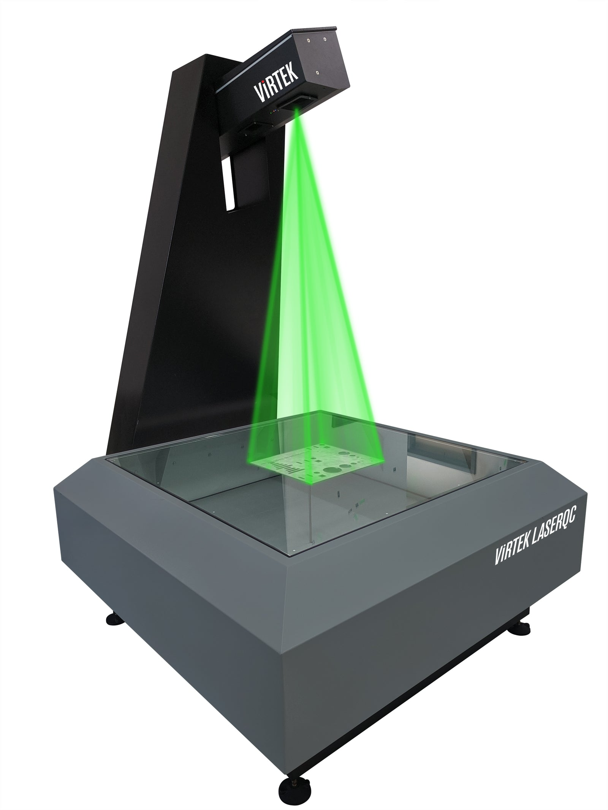

Virtek LaserQC — inspection and projection.
Fast first-article and in-process inspection, laser projection and assembly guidance for sheet metal, truss and aerospace workflows.
Virtek products
Inspection, projection and tracking — three platforms, one integrated system.

LaserQC
Scan flat parts in seconds and compare directly to the CAD model — first-article inspection, in-process checks and reverse engineering from a single portable system.
Learn more
IRIS 3D
Project laser outlines directly onto your work surface for fast, error-free part placement, assembly guidance and welding fixture alignment — no templates needed.
Learn more
ActiveTrack
Real-time laser tracking of large parts and assemblies — continuous positional feedback for composite layup, truss fabrication and large-structure alignment.
Learn moreUse cases
Virtek systems deployed in demanding production environments.
Sheet Metal Inspection
Scan laser-cut and punched flat parts in under 10 seconds — instant GD&T pass/fail comparison against the original CAD file with colour-coded deviation maps.
Truss & Frame Assembly
IRIS 3D laser projection guides fitters through complex joint placement on steel trusses, bridge sections and structural frames — eliminating measurement errors.
Aerospace Composite Layup
ActiveTrack monitors ply position and orientation during composite layup in real time, ensuring conformance to engineering specifications without post-cure inspection delays.
Why Virtek
Proven technology, Indian support, measurable ROI.
Seconds, Not Hours
Replace manual CMM touch-probe inspection with full-field laser scanning — complete first-article checks in under 30 seconds with automatic reporting.
Zero Templates
Laser projection eliminates physical templates, fixtures and mylar overlays — change part numbers instantly by loading a new CAD file, not building a new tool.
Cuttech India Support
Full installation, training and calibration support from Cuttech's India-based engineering team — local service, spares and application expertise you can count on.
See Virtek in action on your parts
Send us a sample part and CAD file — we will scan it and return a full inspection report, free of charge.